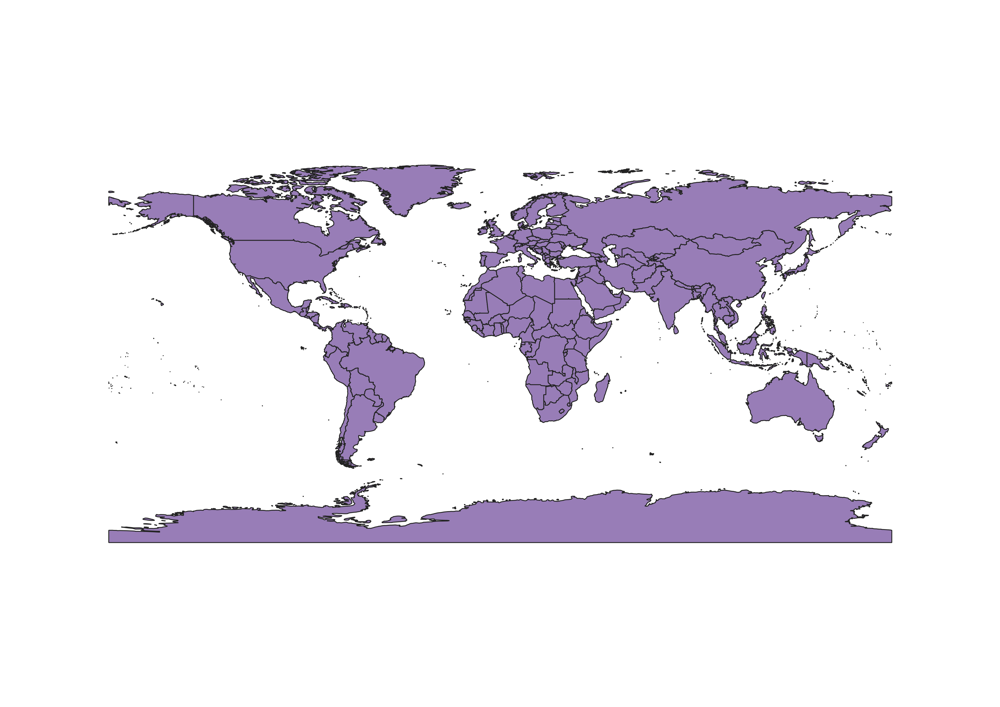
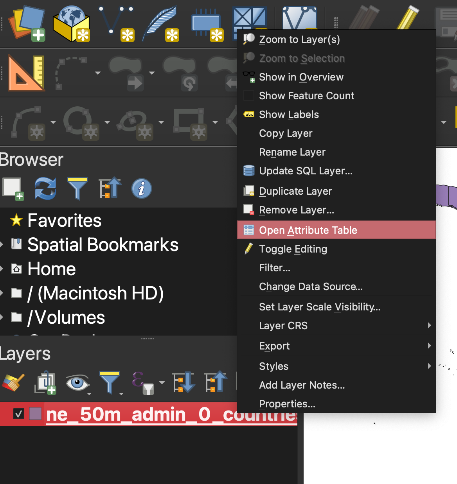
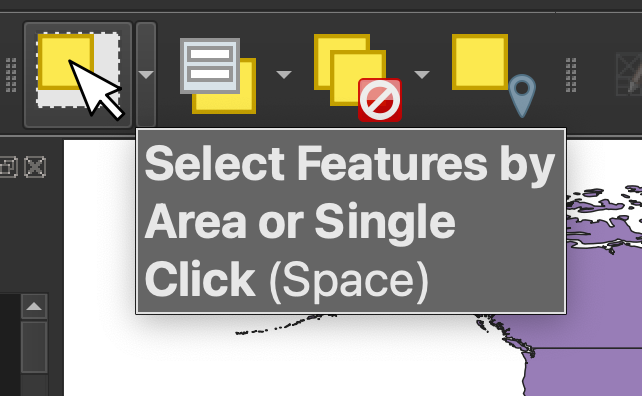
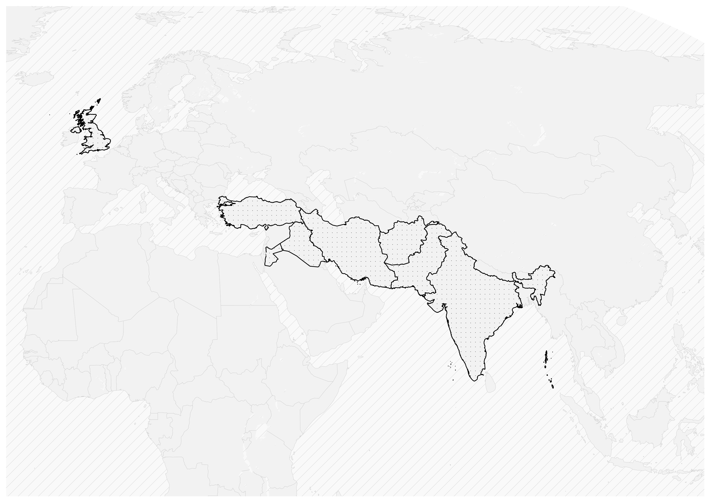

Using Points to Path for Journey Maps in QGIS
Step-by-step instructions for converting a series of locations into a journey map.
1. Ensure you have data for the travel stops stored as points
If you already have point data…
If you already have a spreadsheet that indicates the stops on the route as points or latitude and longitude coordinate pairs, you’ll want to make sure you’ve successfully added your spreadsheet data to the map (tutorial). The add a spreadsheet to QGIS tutorial also gives some example spreadsheet data you can use to model how to format the coordinates, if you are creating or cleaning this data yourself.
Tip: If you are working with a spreadsheet of locations, make sure you have a column that indicates the order of the stops on the travel route. For instance, in the row for the first stop of the route, under the column header
stopsenter value1, in the row for the second stop, enter2and so on.
Creating centroids
Alternatively, you can start with a polygon shapefile of places, and use this file to generate centroids or stops on the journey. For example, in this tutorial we will show how someone traveled from country to country. To do this, we’ll start with a file with all of the countries from cartographic data site Natural Earth. (Download countries).
Add the file to QGIS by dragging the extension ending in .shp or the entire compressed shapefile folder.

Countries shapefile from Natural Earth loaded into QGIS.From this file, you can select the countries traveled to by right-clicking the layer in the layer list and selecting Open Attribute Table.

Pulling out specific places traveled to
Use the columns in the Attribute Table to make sense of which record pertains to which feature on the map. You can select features you want to include on the travel route by highlighting the row corresponding to that country. To the very left of the rows, there is a list 1, 2, 3, 4, etc. numbering the rows. To select a row, click the number to the left of that row. To highlight multiple rows, hold down the command key while making your selection. You’ll notice that once you have selected a feature, that row/feature will now be highlighted on the map.
Alternatively, you can also use the map interface to visually select features by using the Select Features by Area or Single Click button. This is on the icon banner menu across the top of the QGIS project. Once this is engaged, you can simply click features on the map to add them to your selection, rather than using the attributes in the attribute table to make your selection.

Once you have all of your features selected, save them to a new layer. Right-click the layer in the layer list, and select Export → Save Selected Features As. Make sure to indicate where on your computer you want to save the shapefile or geopackage.
Add that new file to the project. Pictured below is a map demonstrating the two layers compiled together: (1) the original data source (all countries), and (2) the selected features (the countries along the travel path).

We are styling the map as we work along using tips from the guide Cartographic Conventions for Academic Publishing.